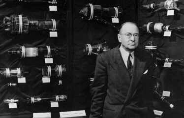

| ISE | Interactive Streaming Everywhere | |
| Faculty Edward Chang PhD Students Sponsors Collaborators |
 The father of TV, Dr. Vladimir Zworykin, with a display of historic television camera tubes. This project is a part of the UCSB Digital Campus project funded by NSF. Specifically, the PI is responsible for the interactive theme of the project. The goal of this interactive-streaming-everywhere (ISE) project is to build file-system and operating-system infrastructures for supporting both wired and wireless streaming on campus. Our vision is to support interactive lecture everywhere before the end of 2004. A fully interactive system (e.g., telepresence) would allow a viewer to be immersed in a distant environment and act upon it as if she/he were there, but we are far from that capacity given the technology of the near future. In this project, we research and develop enabling system infrastructures for supporting viewing interactivity and content interactivity. Viewing interactivity gives a viewer the capability to time-shift a televised program through pause, fast-forward and instant replay. Content interactivity allows a viewer to query or to change the content of multimedia data. With the capabilities to change both pace and content, a class of high school students could conduct science experiments in small groups through a virtual lab and their instructor could review their progress in real-time or with a phase delay. Many other benefits exist. In this project, we plan to investigate a client/server dual architecture that turns non-interactive broadcast streams into interactive ones for supporting simultaneous users. On the one hand, the client/server dual system acts as a client for broadcasters (or content providers) to enable interactivity. On the other hand, it caches and indexes streams for servicing a number of interactive users. We believe that this architecture is attractive because it is more practical and easier to deploy than the traditional server-based model, and it is scalable compared to the single-user digital-VCR model. Designing a client/server dual system for supporting interactivity presents many challenges. Besides the need for IOs to be properly scheduled to fulfill real-time data requirements and to minimize response time (these issues have been studied before), a client/server dual system faces the following four new research challenges, though there are others:
To tackle the above technical challenges, this project will design and implement four system components:
We will conduct this research project in an implementation-centric manner so that we can fully grasp the intricacy of the interplay and tradeoffs between various design parameters. The developed infrastructures will be made publicly available so that other research institutes can use them to advance other aspects of multimedia research. Our partners, NSF, SONY, and California Digital Media Innovation Program, will help provide support in the areas of expertise, funding and evaluation.
|